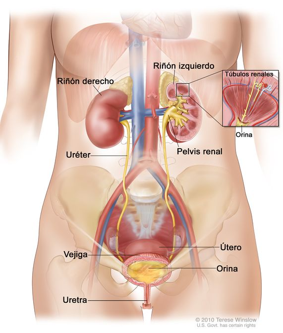
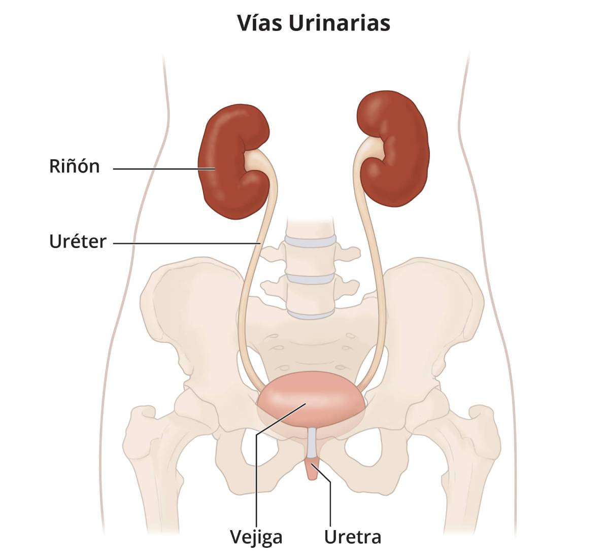
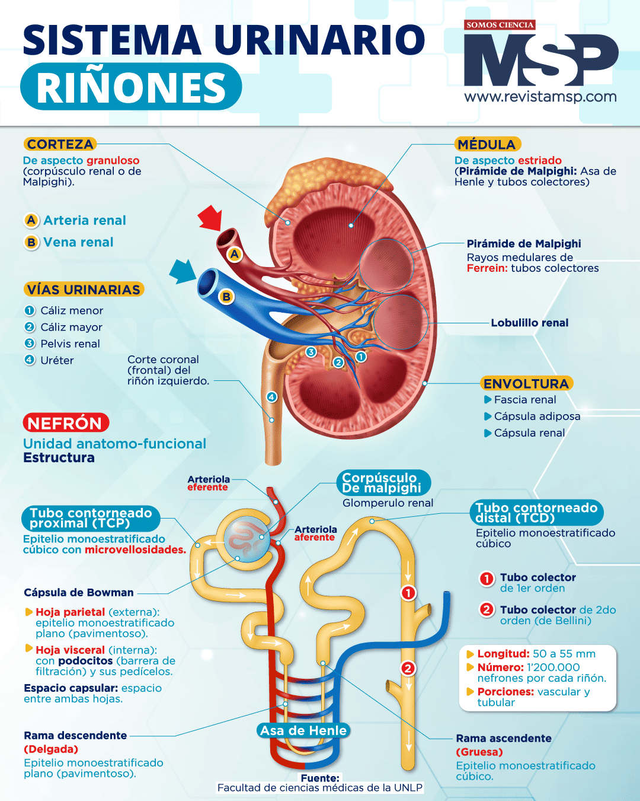
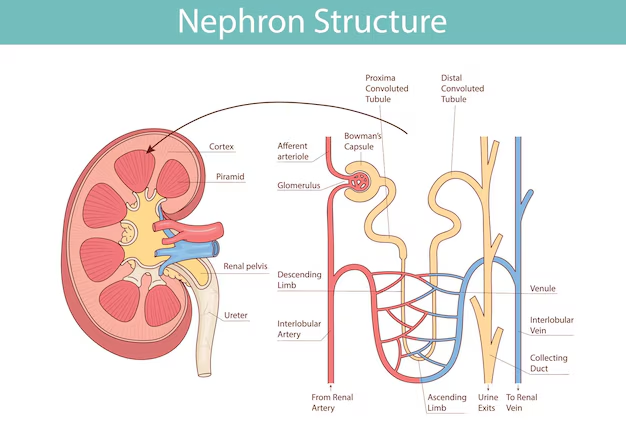
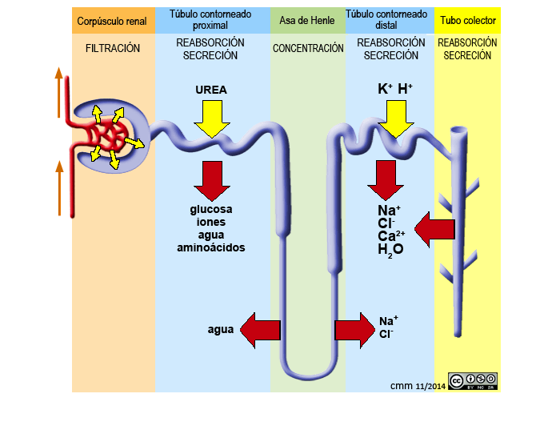
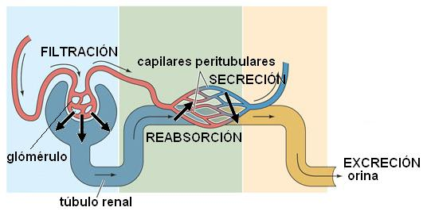
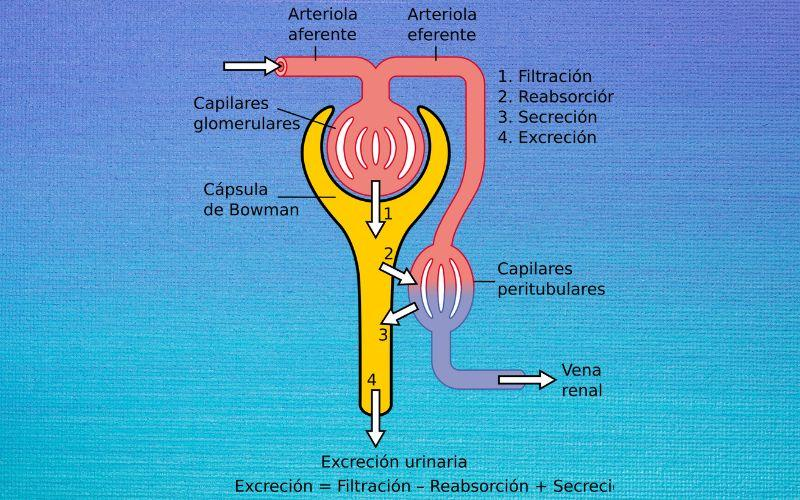

🚰 ¿Qué es el Aparato Urinario?
El aparato urinario (o sistema urinario) es el conjunto de órganos encargados de producir, almacenar y eliminar la orina. Su función principal es filtrar la sangre, eliminar desechos metabólicos (como la urea y el ácido úrico), regular el equilibrio de agua y electrolitos, y controlar la presión arterial. Es uno de los sistemas más eficientes del cuerpo humano.
Aunque parece simple —"filtrar y orinar"— los riñones realizan aproximadamente 1 millón de nefronas (unidades funcionales) que filtran unos 180 litros de sangre al día, de los cuales solo 1-2 litros se convierten en orina. Eso significa que reabsorben el 99% del agua filtrada.
🎯 Objetivos de Aprendizaje
Al finalizar este tema serás capaz de: identificar los órganos del aparato urinario y sus funciones, describir la estructura del riñón y la nefrona, explicar los procesos de filtración, reabsorción y secreción, comprender la composición de la orina, y reconocer las principales enfermedades renales.
🗺️ Anatomía del Aparato Urinario
El sistema urinario consta de cuatro órganos principales: riñones (productores de orina), uréteres (conductos transportadores), vejiga (reservorio) y uretra (conducto de salida).

Figura 1: Sistema urinario completo con riñones, uréteres, vejiga y uretra. Fuente: NCI / Diccionario de Cáncer.

Figura 2: Vías urinarias principales. Fuente: NIDDK.
🫘 Riñones (2)
Órganos en forma de haba ubicados a ambos lados de la columna vertebral (T12-L3). Cada uno pesa ~150g, mide ~12cm y contiene ~1 millón de nefronas. Reciben el 20-25% del gasto cardíaco (1.2 L/min de sangre).
🔄 Uréteres (2)
Tubos musculares de ~25-30 cm que transportan la orina desde la pelvis renal hasta la vejiga. Usan peristalsis (contracciones ondulantes) para impulsar la orina. Tienen válvulas en su unión con la vejiga que evitan el reflujo.
🎈 Vejiga Urinaria
Órgano muscular hueco (músculo detrusor) que almacena orina. Capacidad: ~400-600 mL en adultos. La pared se expande gracias a pliegues (rugas). Cuando se llena, los receptores de tensión envían señales al cerebro para orinar.
🚪 Uretra
Conducto que expulsa la orina fuera del cuerpo. En hombres mide ~20 cm (atraviesa próstata y pene); en mujeres, ~4 cm. La uretra masculina también transporta semen. El esfínter uretral controla la micción voluntaria.
🔬 El Riñón y la Nefrona: La Fábrica de la Orina
La nefrona es la unidad funcional del riñón. Cada riñón tiene aproximadamente 1 millón de nefronas, y cada una es capaz de producir orina de forma independiente. Una nefrona consta de dos partes principales: el corpúsculo renal (filtra la sangre) y el túbulo renal (modifica el filtrado).

Figura 3: Infografía del riñón y la nefrona con anatomía detallada. Fuente: Medicina y Salud Pública.

Figura 4: Estructura de la nefrona con sus partes etiquetadas. Fuente: Freepik / Magnific.
Partes de la Nefrona
- Glomérulo: Red de capilares donde ocurre la filtración. La presión arterial empuja agua y solutos pequeños hacia la cápsula de Bowman.
- Cápsula de Bowman: Estructura en forma de copa que recoge el filtrado glomerular. Es la primera etapa de la formación de la orina.
- Túbulo contorneado proximal (TCP): Reabsorbe ~65% del agua, toda la glucosa, aminoácidos, vitaminas y electrolitos (Na⁺, Cl⁻, K⁺).
- Asa de Henle: Crea un gradiente de concentración en la médula renal. El brazo descendente es permeable al agua; el ascendente, a sales. Fundamental para concentrar la orina.
- Túbulo contorneado distal (TCD): Reabsorbe más Na⁺ y Cl⁻ bajo control hormonal (aldosterona). Secreción de K⁺ y H⁺ para regular pH.
- Tubo colector: Recoge orina de múltiples nefronas. Reabsorción final de agua bajo control de la hormona ADH (vasopresina).
¿Sabías que...?
Si se extendieran todas las nefronas de tus dos riñones, cubrirían aproximadamente 80 km de longitud. Eso es casi la distancia de una maratón completa. Y todo en un órgano del tamaño de un puño cerrado.
⚗️ Formación de la Orina: Tres Procesos Clave
La orina se forma mediante tres procesos consecutivos en la nefrona: filtración glomerular, reabsorción tubular y secreción tubular. Juntos transforman 180 litros de filtrado en 1-2 litros de orina diaria.

Figura 5: Procesos de formación de la orina en la nefrona. Fuente: IES Abyla.

Figura 6: Filtración, reabsorción y secreción en la nefrona. Fuente: Genomasur.

Figura 7: Las 4 etapas de la formación de la orina. Fuente: Lifeder.
🔵 Filtración Glomerular
En el glomérulo, la alta presión arterial (~55 mmHg) empuja agua, iones, glucosa, aminoácidos y urea a través de la membrana de filtración hacia la cápsula de Bowman. No atraviesan células sanguíneas, proteínas grandes ni plaquetas. Se producen ~180 L de filtrado al día.
🟢 Reabsorción Tubular
El túbulo proximal reabsorbe ~65% del agua y solutos útiles (glucosa, aminoácidos, vitaminas, electrolitos). El asa de Henle y el túbulo distal reabsorben más agua y Na⁺. En total, se reabsorbe el 99% del filtrado (~178 L/día). La reabsorción es selectiva y regulada por hormonas.
🟡 Secreción Tubular
El túbulo secreta al filtrado sustancias que deben eliminarse: K⁺, H⁺, creatinina, antibióticos, toxinas y algunos medicamentos. Este proceso "limpia" la sangre de compuestos no filtrados en el glomérulo. Es activo (requiere energía) y selectivo.
🧪 Ecuación de la Orina
Orina = Filtrado − Reabsorción + Secreción
Filtrado: 180 L/día | Reabsorción: 178.5 L/día | Secreción: variable
Orina final: 1-2 L/día (concentrada en urea, creatinina, ácido úrico y electrolitos excedentes)
🧪 Composición de la Orina y Funciones del Sistema
Funciones del Aparato Urinario
🗑️ Eliminación de Desechos
- Urea: Producto del metabolismo de proteínas. Tóxica si se acumula.
- Creatinina: Desecho del metabolismo muscular. Indicador de función renal.
- Ácido úrico: Producto del metabolismo de ácidos nucleicos (ADN/ARN).
- Bilirrubina: Producto de degradación de hemoglobina (da color amarillo).
⚖️ Regulación Homeostática
- Balance hídrico: Retiene o elimina agua según necesidad (ADH).
- Presión arterial: Regula volumen sanguíneo y secreta renina.
- pH sanguíneo: Elimina H⁺ o HCO₃⁻ para mantener pH ~7.4.
- Electrolitos: Controla Na⁺, K⁺, Ca²⁺, Cl⁻ y fosfatos.
¿Sabías que...?
La color de la orina puede indicar tu estado de hidratación: amarillo pálido o transparente = bien hidratado; amarillo oscuro o ámbar = deshidratación leve; marrón o té = deshidratación severa o problema hepático; rojo o rosado = sangre (consulta médica urgente); azul o verde = raro, puede ser por alimentos o infecciones. La orina de un bebé recién nacido es casi incolora porque sus riñones aún no filtran eficientemente.
⚠️ Enfermedades del Aparato Urinario
Las enfermedades renales afectan aproximadamente al 10% de la población mundial y son una de las principales causas de muerte. Muchas son silenciosas en sus etapas iniciales, por lo que la prevención y el diagnóstico temprano son fundamentales.
| Enfermedad | Descripción | Síntomas / Causas |
|---|---|---|
| Infección urinaria (ITU) | Infección bacteriana (E. coli) de vías urinarias. Más frecuente en mujeres por uretra corta. | Ardor al orinar, frecuencia urinaria, orina turbia. Causa: bacterias del intestino. |
| Cálculos renales (litiasis) | Formación de cristales (oxalato de calcio, ácido úrico) en riñones o uréteres. | Dolor intenso (cólico nefrítico), hematuria. Causa: deshidratación, dieta alta en oxalatos. |
| Insuficiencia renal | Pérdida progresiva de la función renal. Puede ser aguda (reversible) o crónica (irreversible). | Fatiga, edemas, náuseas, prurito. Causa: diabetes, hipertensión, glomerulonefritis. |
| Enfermedad renal crónica (ERC) | Daño renal irreversible que progresa durante meses o años. Requiere diálisis o trasplante. | Hipertensión, anemia, pérdida de apetito. Causa: diabetes tipo 2, hipertensión no controlada. |
| Glomerulonefritis | Inflamación de los glomérulos. Puede ser aguda (post-infecciosa) o crónica. | Hematuria, proteinuria, edemas. Causa: infecciones (estreptococo), autoinmunidad. |
| Síndrome nefrótico | Pérdida masiva de proteínas por orina (>3.5 g/día) por daño de la membrana de filtración. | Edemas severos, proteinuria, hipoproteinemia. Causa: diabetes, lupus, infecciones. |
🟢 Prevención
- Hidratación: Beber 2-3 litros de agua al día diluye la orina y previene cálculos.
- Dieta balanceada: Reducir sodio, azúcares y proteínas en exceso.
- No retener la orina: Orinar cuando se sienta la necesidad evita infecciones.
- Higiene: Limpieza adecuada (frontal a trasera en mujeres) previene ITU.
- Control médico: Análisis de orina y creatinina sérica anuales.
🔵 Tratamientos
- Diálisis: Máquina que filtra la sangre externamente (hemodiálisis) o usa líquido peritoneal (diálisis peritoneal).
- Trasplante renal: Sustitución del riñón dañado por uno donado. Es el tratamiento definitivo para insuficiencia renal terminal.
- Medicamentos: Antibióticos para ITU, inhibidores de ECA para proteger riñones, diuréticos.
¿Sabías que...?
Una persona con insuficiencia renal terminal necesita diálisis ~3 veces por semana, durante 4 horas cada sesión, para toda la vida (a menos que reciba un trasplante). Durante la diálisis, la sangre pasa por un filtro artificial que realiza la función que los riñones ya no pueden hacer. En Venezuela, el acceso a diálisis y trasplantes enfrenta graves limitaciones por la crisis de salud, lo que ha llevado a que muchos pacientes dependan de donaciones y organizaciones internacionales.
🤯 Datos Curiosos sobre tu Aparato Urinario
¿Sabías que...?
Los riñones son los únicos órganos que pueden funcionar con solo uno. Una persona con un solo riñón (por donación o nacimiento) puede vivir una vida completamente normal. De hecho, un riñón donado puede compensar hasta el 70-80% de la función de dos riñones sanos. Los donantes vivos de riñón tienen una expectativa de vida similar a la de la población general.
¿Sabías que...?
La orina fue el primer fertilizante usado por la humanidad. Los romanos recolectaban orina pública para blanquear ropa (por el amoníaco) y los agricultores chinos la usaron durante siglos para fertilizar cultivos. Hoy, algunos países europeos recuperan fósforo de aguas residuales para combatir la escasez de este mineral esencial para la agricultura.
¿Sabías que...?
Los astronautas en la ISS reciclan su orina para convertirla en agua potable. El sistema "Water Recovery System" filtra, desinfecta y purifica la orina, el sudor y la humedad del aire, logrando una recuperación del 93% del agua usada en la estación. El lema de la NASA: "El café de hoy es el café de mañana."
¿Sabías que...?
El record mundial de retención de orina no está oficialmente documentado por razones médicas obvias, pero se sabe que retener la orina por más de 6-8 horas puede causar infecciones, cálculos y daño al músculo detrusor. La vejiga puede expandirse hasta ~1,000 mL (riesgo de ruptura), pero la mayoría de las personas sienten urgencia intensa a los 400-500 mL.
📝 Verifica tu Aprendizaje
Responde estas preguntas para comprobar lo que has aprendido.